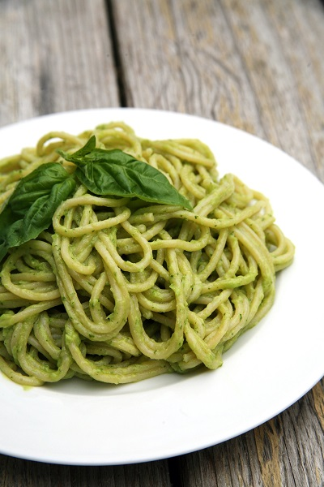

Basil Avocado Pasta

Description
This is a quick and healthy pasta I like to make! It's super delicious and takes roughly 15 minutes to prepare.
Ingredients
- any kind of pasta noodles
- 1/4 a cup of mint
- half an avocado
- water
- 1/4 a lemon
- salt
- 2 garlic cloves
Directions
- Put some water into a pot and place the pot on a stove. (high heat)
- Wait until water comes to a boil. When it starts to boil, put the noodles in.
- While the noodles are cooking, wash and cut the avocado, lemon, mint, and garlic.
- Put the lemon, avocado, garlic, and mint into a blender or food precessor. .
- When the mixture is smooth and creamy, add salt to taste.
- Strain the noodles and then pour the sauce on top.
- Enjoy your meal!